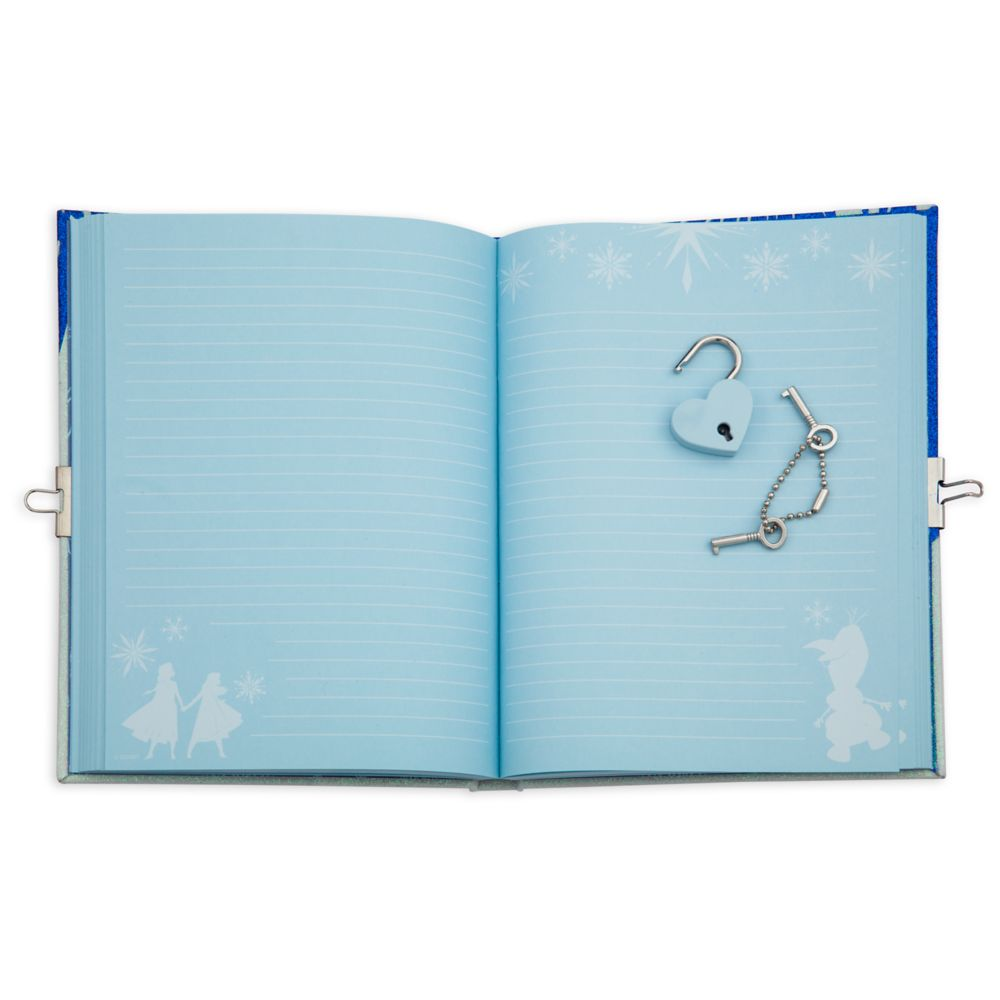

Diary Record Website
This is a group project. The programming language is Python, the database system is MySQL, the framework is Django. This website is designed to allow user to post their own diaries.